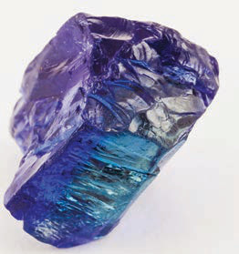
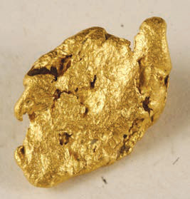
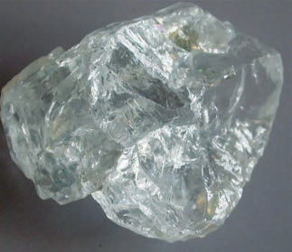

Tanzania pekee.Sekta ya madini ni muhimu kwa uchumi wa Tanzania, ikivutia uwekezaji wa kigeni na kuzalisha mapato kupitia mauzo ya nje.Kielelezo namba 1 kinawasilisha baadhi ya madini yanayopatikana Tanzania.



Ardhi
Tanzania ina utajiri wa rasilimali ardhi, ikiwemo maeneo ya ardhi yenye rutuba na maeneo makubwa ya malisho.Ardhi ya Tanzania ina udongo wenye rutuba unaofaa kwa kilimo cha mazao mbalimbali kama vile kahawa, chai, tumbaku, mahindi, maharage, mpunga, alizeti na mazao mengineyo.Aidha, Tanzania ina maeneo makubwa na muhimu kwa ufugaji wa mifugo mbalimbali kama vile ng’ombe, kondoo na mbuzi.Baadhi ya maeneo ya ardhi ya Tanzania ni mbuga na hifadhi za wanyamapori, mimea na viumbe hai wengine.Pia, maeneo mengine ya ardhi hutumika kwa ajili ya makazi ya watu, viwanda na biashara.Hivyo, ardhi ni rasilimali muhimu ambayo huchochea maendeleo ya kiuchumi ya Tanzania, ustawi wa kijamii na maendeleo ya mtu mmoja mmoja.
Maji
Maji ni rasilimali muhimu sana kwa viumbe hai wote wakiwemo binadamu, wanyama na mimea.Tanzania ina rasilimali nyingi za maji zinazopatikana katika vyanzo na maeneo tofauti ya nchi, ikiwemo mabwawa, mito, maziwa, bahari na maji ya chini ya ardhi.Rasilimali maji zina mchango mkubwa katika uchumi wa nchi na maisha ya kila siku.Baadhi ya rasilimali kubwa na muhimu za maji ni Bahari ya Hindi, Ziwa Tanganyika, Ziwa Viktoria, na Ziwa Nyasa.Pia, kuna mito kama vile; Mto Rufiji, Ruvuma, Malagarasi, Ruvu, Wami, Kagera na Pangani na mabwawa makubwa kama vile; Julius Nyerere, Mtera, Nyumba ya Mungu na Kidatu.Watu na viumbe wengine hutegemea maji ili kuishi.